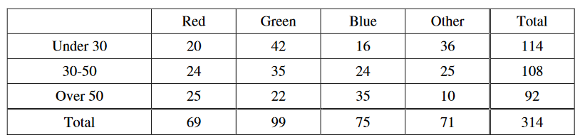

Each person in a random sample of adults indicated his or her favorite color. The results, shown in the table below, are reported by age group of the respondents.

If choice of color is independent of age group, which of the following expressions is equal to the expected number of respondents who are aged 30 to 50, inclusive, and prefer green?